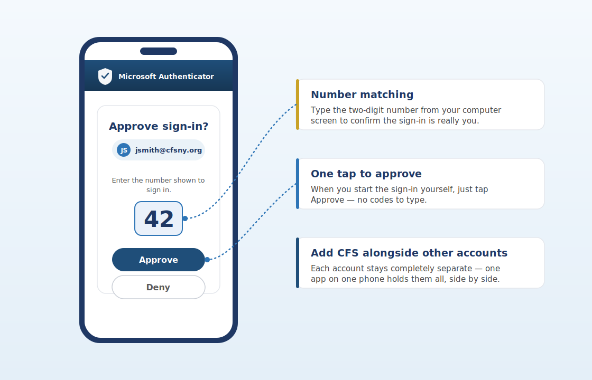

One quick tip. About a minute to read. Something you can use today.
This Week’s Tip
Set up Microsoft Authenticator on your phone — then approve your CFS sign-ins with a single tap, no codes to type.
Why it matters
Your password alone isn’t enough to keep your CFS account safe, and typing six-digit codes from a text message is slow and easy to fake. Microsoft Authenticator turns your phone into a secure second key: when you sign in, a quiet notification appears, you tap Approve, and you’re in. It’s faster than texted codes and far harder for an attacker to get around. And if you already use Authenticator for another job, good news — you can add CFS right alongside it, with no conflict. More on that below.
How to set it up (about 5 minutes)
Using it day to day
When you sign in to Outlook, Teams, or any CFS app, a notification appears on your phone — just tap Approve. Sometimes you’ll see a two-digit number on your screen and be asked to type it into the app. That’s number matching, and it confirms the request is really coming from you.
Already use Authenticator for another employer?
Add CFS — the two won’t mix. Authenticator is built to hold several accounts at once, each completely separate. Adding your CFS account does not touch, see, or interfere with your other company’s account, and you don’t need a second app or a second phone. Just open the app you already have, tap +, choose Work or school account, and follow the same steps above. You’ll simply see both accounts listed side by side.

Illustration of an Authenticator approval with number matching — your screen may vary slightly by phone and version.
Try an AI prompt this week
Open Copilot Chat in Outlook or Teams.
Past issues live on the CFS intranet — IT Help & Resources.
Have a topic idea or question? Email HelpDesk@cfsny.org.
— Jim Noriega and the CFS IT Team